Your home, on the wall.
Glow Dashboard is a touch-first Home Assistant dashboard for wall tablets. Five questions build it from your home; then every card moves, resizes and swaps by touch.
Touch the demo house
The real dashboard, running a made-up house in your browser. Dim a light, start a mode, play a playlist: nothing here reaches a real home.
Built in five questions
First, where it goes and which room it’s in.
- Lights 23
- Music 15
- Climate 32
- Cameras 6
- Scenes 15
- Energy 18
Then what it shows, and which rooms.
Then the look: colours, glass or solid.
Then it draws the pages, and builds them.
Everything it does
- Move anything by touch
Drag a card to move it, pull a corner to resize it, hold an empty spot to add one. Undo is one tap away.
- Over a hundred card styles
Dimmers that fill with a light’s own colour, glowing orbs, capsules, rings, the family’s calendar as lanes, live camera tiles. Pick one from live previews.
- Modes take the screen
Shower, theatre, party, bedtime, cooking: a full-screen layer with exactly what that moment needs, a timer, and one big Done to leave.
- Music in every room
Tick the rooms, pick a playlist, set each room’s level. With Music Assistant, rooms join and leave without the music skipping.
- Lights that look like light
Main lights as big dimmers, ambient ones as glowing chips, and WLED strips showing what their LEDs are doing, live.
- It finds what you add
Add an integration to Home Assistant and its cards appear on the page they belong to, with a notice and an Undo.
- A screensaver with the song
Clock faces, photos, the sky. When music plays in the room, the song with controls that work without waking the screen.
- Made for a cheap tablet
Tuned for the Amazon Fire HD 10 and its old browser: glass or solid cards, motion that keeps to the frame budget. Phones and big screens too.
Nothing by that name. Try “music” or “lights”.
Every screen
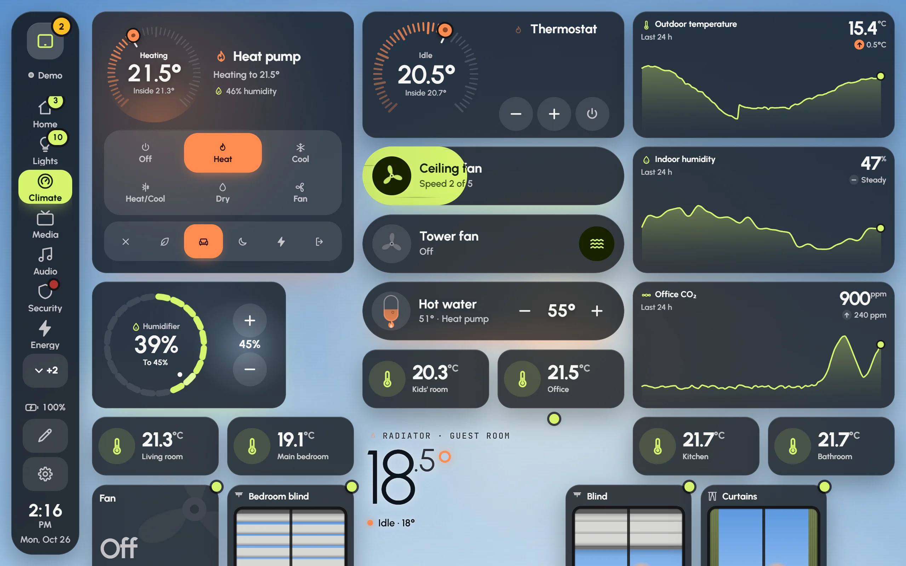
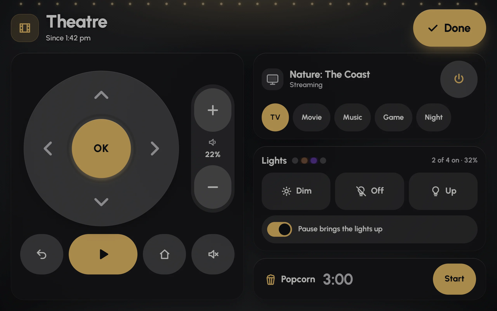
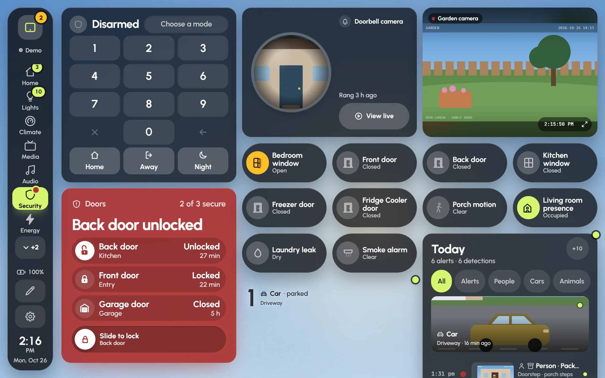
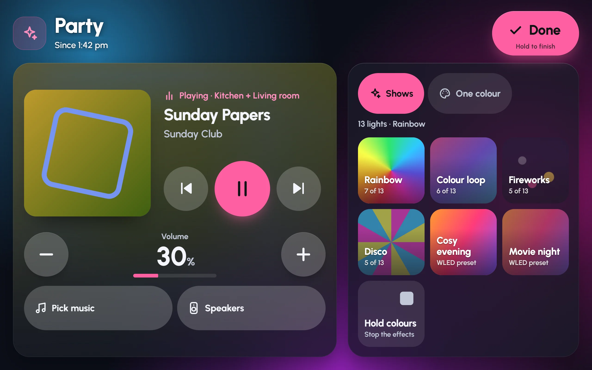
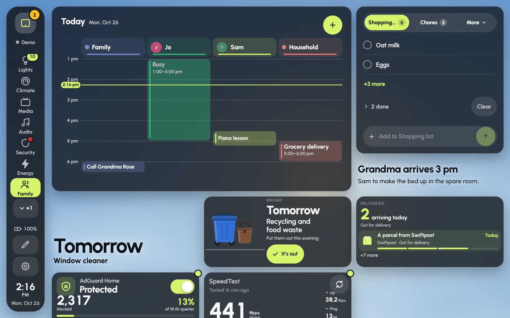
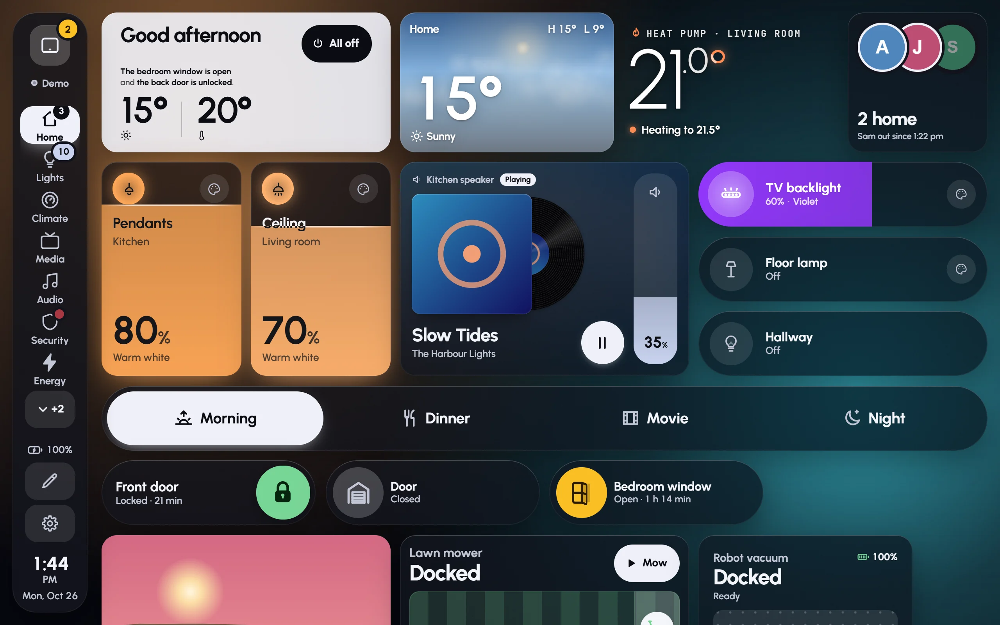
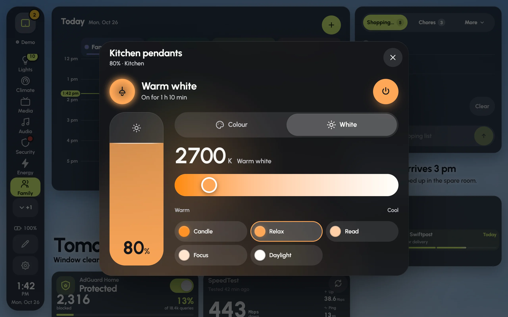
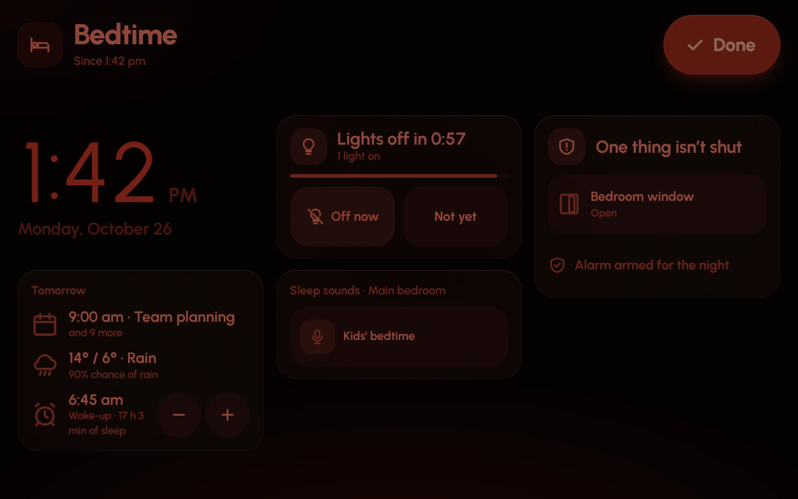
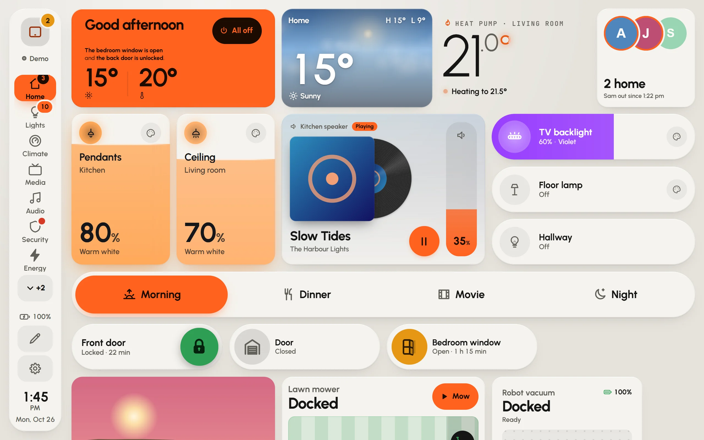
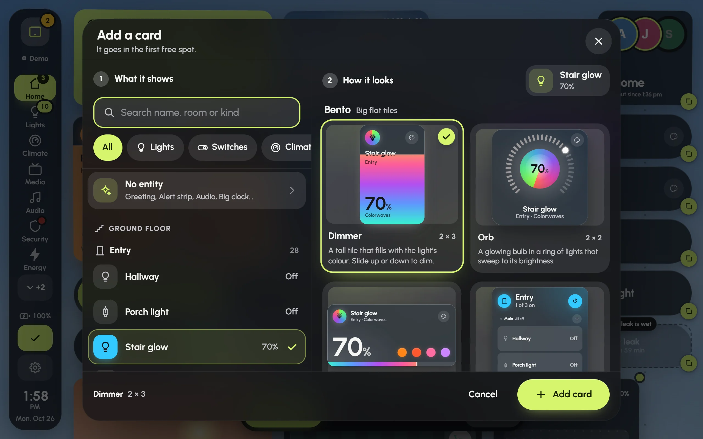
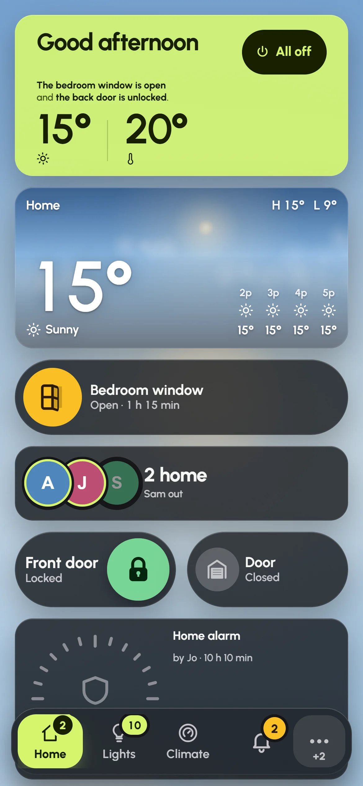
Guides
Start
- Getting started5 min
- The setup wizard5 min
- Wall tablets5 min
Make it yours
Every day
- Modes6 min
- Music5 min
- Lights4 min
- Screensaver and night4 min
- Found automatically3 min
When something’s off
- Troubleshooting6 min
Questions
Does it replace my Home Assistant dashboards?
No. Glow is a Home Assistant app with its own place in the sidebar. Your Home Assistant dashboards stay exactly as they are, and you can use both.
Which tablets does it run on?
Any tablet or phone with a browser from the last few years. It is tuned for the Amazon Fire HD 10, whose browser is old and slow, so everything else has room to spare. Kiosk browsers like Fully Kiosk work well.
Do I need Home Assistant OS?
Apps need Home Assistant OS. If you run Home Assistant in Docker or as Core, the app store isn’t there, so this way of installing isn’t available to you yet.
Where are my dashboards kept?
In Home Assistant itself, so every screen sees the same dashboards and nothing is lost if a tablet breaks. Settings › Backup keeps a copy as a file too.
Can each tablet show a different dashboard?
Yes. Make a dashboard for the kitchen, one for the hallway and one for a phone, then pick one per screen under Settings › This screen.
Does it work without the internet?
Yes. It talks only to your Home Assistant. Album art comes from the music services’ own picture servers, and the app keeps a copy of each so tablets load it from your home network.
Is the no-sign-in option safe?
Only on a home network you trust. With it on, tablets that open the app’s port control your home without signing in, and so could anyone else on your Wi-Fi. It refuses the dangerous parts, like apps, backups and restarts. It is off unless you turn it on.
What does it cost?
Nothing. Glow Dashboard is free and open source under the MIT licence.